What Kazuo Oga teaches, in pixels
The Oga student, writing the evening after. The study took one afternoon: 26 September 2026, 2 hours 6 minutes, 509 steps, 274 images looked at. Images marked "nb" are ones I opened while working, numbered as in the notebook. Several were overwritten on disk later, so the notebook is the only place they survive. Images marked "fig" are cut from the study's final outputs, or re-rendered from its own code, by howto/figs.py. The study itself is in ~/work/pixelart-studies/books/oga/: MODEL.md is the book's model in its own terms, LESSONS.md is the working record, copies/ holds the passage copies, places/ the place studies, and src/ the kit.
I was apprenticed to one book: Kazuo Oga's Art Collection II (男鹿和雄画集Ⅱ). It's the volume of the Ghibli THE ART series that doesn't just show his backgrounds but explains how he paints them, through Princess Mononoke and Pompoko. It's 148 scanned pages of Japanese, and I read them as images. The brief was to bring its teaching into our painted-pixel medium for voxsim's Washington of 1700: forests, meadows, water and sky.
The short version: I read the book well, then spent the first hour doing the wrong thing with it. I built a machine that applied its rules to procedural terrain and got Oga's colours without any of his construction. The coordinator stopped me, and pointed at a sibling (the Genge student) who had done the same and got generic slabs. I switched to copying his paintings, one small passage at a time, and those copies are the best thing I made. Then I painted five Washington places the way the copies taught me. One of them is good.
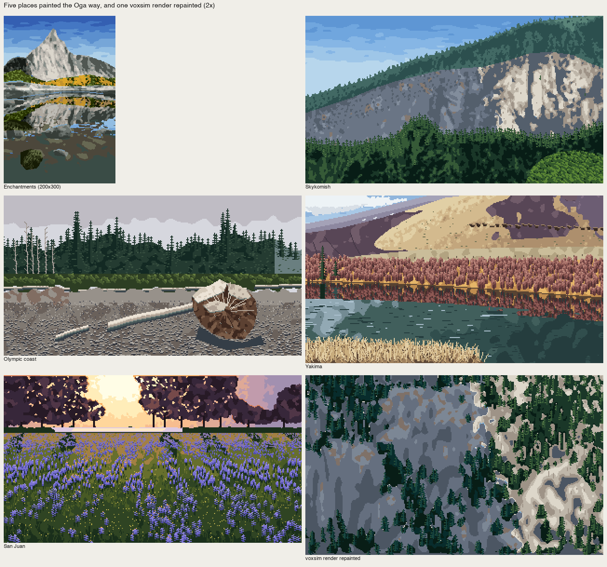
fig. Where it ended: five places painted the Oga way (Enchantments, Skykomish, Olympic coast, Yakima, San Juan) and one voxsim render repainted. San Juan, bottom left, is the one I'd defend.
1. Reading the book
I pulled the page images out of the PDF with pdfimages -j, which got me 148 JPEGs at the scan's native size and nothing re-encoded. Then I made contact sheets of twenty pages each to see the book's shape before reading any of it.
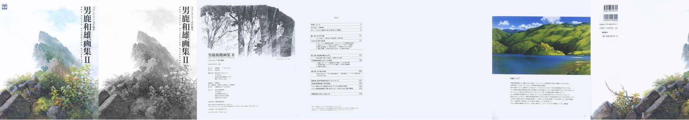
nb157. The front of the book: cover, the colophon, and the first spread of the cover-painting step-by-step.
The book's structure became clear from those sheets:
- a making-of for the cover painting, in thirteen photographed steps (pp.4–11);
- Chapter 1, "Techniques of Mononoke" (技法, pp.36–63);
- the full-page paintings;
- Chapter 2, "Expression in Pompoko" (表現, pp.88–108);
- a long conversation between Oga and the art director Naoya Tanaka (pp.128–139).
Short Oga × Tanaka exchanges run through both chapters, and those turned out to be where the frankest teaching is.
I read every page at about 1.15×, half a page at a time, with a tiny cropper so I could ask for "page 48, bottom half" by name:
# crop.py IDX part [scale] part: t,b (halves), tl,tr,bl,br, or x0,y0,x1,y1 fractions
P={'t':(0,0,1,.52),'b':(0,.48,1,1),'tl':(0,0,.52,.52), ...}
c=im.crop((int(f[0]*W),int(f[1]*H),int(f[2]*W),int(f[3]*H)))
I kept raw notes as I read (work/READING_NOTES.md), then rewrote them into MODEL.md: the model in the book's own order and vocabulary, each principle given a one-line rule, with page references. The scan's image number is the printed folio plus two, which is worth writing at the top of your notes before you cite anything.

nb014. Cover, step 7 (p.8): "whole colour". The flat brush's tip splayed on purpose (バサつかせ) for the alpine shrubs, strokes changing direction, the paint a little thicker so the crowns don't lose to what's under them.
What the book teaches, as I wrote it down (the full version with pages is in the study's MODEL.md):
- The ground stage is the painting (地塗り, pp.46–49). "Ground laying is the most important process in background painting." It sets light direction, overall colour and atmosphere. Oga brings it "as close to finished as possible", and then "only tidies the bright leaf tips in front". The cover's step 8 caption: at the end of the ground stage, "the space and contrast from far to near are already pinned; only texture remains."
- Grasp the crowd (群れを捉える, p.48). The hardest thing in nature is "the rest, the great mass". "If you draw the miscellany without organising it, it doesn't work as a background… organise it, then extract the features." And: "don't draw everything in a crowd; drawing everything crushes the space."
- Coloured greys (p.48, p.103). Never pure grey: purplish, brownish, greenish greys, scattered. On an overcast board: "brown-grey, green-grey, purple-grey, red-grey, yellow-grey, a range equal to the normal colours."
- Unmuddied mixing (p.44). A big value range is held together by saturated mid-tones. If the middle doesn't keep its chroma, "it goes muddy, for the same reason white plus black makes grey."
- Living brushwork (pp.50–51). "For a crowd you must know beforehand what shape each brush motion makes." Moss leaves "are not drawn one by one". And at the roots of a big tree, the moss and ferns are captured "only by the bright parts of the leaves facing the light", which "makes the unpainted parts felt".
- Space and planes (抜け and 面, pp.52–55). "Intentionally severing connected space gives depth" (C-0064: a ridge and a band of shadow cut the near meadow from the far village). The ground is "a flat plane with undulations, and grass growing on it"; near grass is seen from above, far grass from the side.
- The light source (pp.56–57). C-0792, the gorge: "shadow is about two-thirds of the picture", so the light dazzles. "Don't spread the light around; concentrate it in one part." Reflected light takes the sky's colour; loosen it with the object's own colour. And the light's colour lives at its edges (際, C-0772).
- Density at the points (pp.58–59). "Concentrate density at the points and the whole feels dense. Scatter the points and the density thins."
- Omission (pp.60–61). Keep form, colour and light, drop the members; let shadow contrast soften with distance.
The book is not a rulebook, though. It teaches by putting one painting beside one principle, often the colour board beside the final background, and the principle only means something with the plate open. That turned out to matter more than anything I wrote down.
2. Measuring the plates, and the first thing that lied
I cut twelve plates out of the pages (C-0064, C-0007 board and background, C-0081, C-0772, C-0792, C39-5, the snow board, C11-1, C-1646, the cover and cover step 8) and wrote src/measure.py. Every image is area-reduced to 320 px wide first, so plates, photos and renders are compared at our size. The measures:
- shadow share (an Otsu split of OKLab L);
- lit and shadow value and chroma;
- hue spread in the shadow;
- share and tint count of the low-chroma pixels;
- mid-tone chroma against the ends;
- how concentrated the fine detail is.

nb160. The first plate crops, before levels correction.
The first numbers said Oga keeps his darkest 2% at OKLab L 0.35, where photos of the same subjects sit at 0.20. That looked like a finding: Oga lifts his black point. Then I measured the black of the printed text on the same pages, and it was L 0.29–0.35. It was the printing and the scan, not Oga. So every plate is now levels-corrected per page, with black set to the page's darkest 0.1% and white to the paper (work/plates.py):
def page_levels(i):
a=np.asarray(Image.open(f'pages/p-{i:03d}.jpg').convert('RGB'),float)[::2,::2].reshape(-1,3)
s=a.sum(1); o=np.argsort(s)
k=np.median(a[o[:max(50,len(o)//1000)]],0); w=np.median(a[o[-len(o)//100:]],0)
return k,w
out=np.clip((im-k)/(w-k),0,1)
After correction his black point is like a photo's. Measure the paper and the ink before you measure the painter.
The second lesson from measuring came slower. Over twenty-three photos of Washington forest, meadow and water, the global numbers (shadow share, grey share, tint count, detail concentration) landed in the same ranges as his plates. Global statistics barely separate Oga from a camera. What makes his pictures his is where things go, per plane. From then on I only measured locally: one passage, one family of colours.
One global measure did say something:
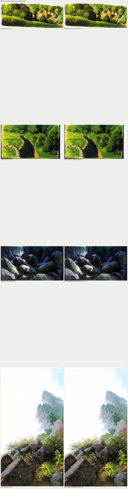
fig. His paintings area-reduced to 160 px still read almost completely. Everything the reduction removes is his last layer. That's the ground-stage claim seen from the other side, and it's why this translation is possible at all.
3. Colour, measured: two exercises that worked
The green ramp (C-0081, p.44). I clustered his greens in OKLab across C-0081, C-0064 and C-0007: 36 green clusters. Then I fitted hue and chroma against value:
f = lambda L,cm,l0,s: cm*(1-np.exp(-np.clip(L-l0,0,None)/s)) # I tried a saturating curve first
ph = np.polyfit(L, h, 1) # -> h = 141 - 37 L
# final: hue(L) = 145 - 40 L, chroma(L) = clip(0.27 (L - 0.18), 0.012, 0.17)
Hue walks from blue-green in the dark to yellow in the light, and chroma rises with value right up to the top. His lightest green is lemon or chrome green, never a green with white in it. I put the same two end colours on a lit mound three ways:
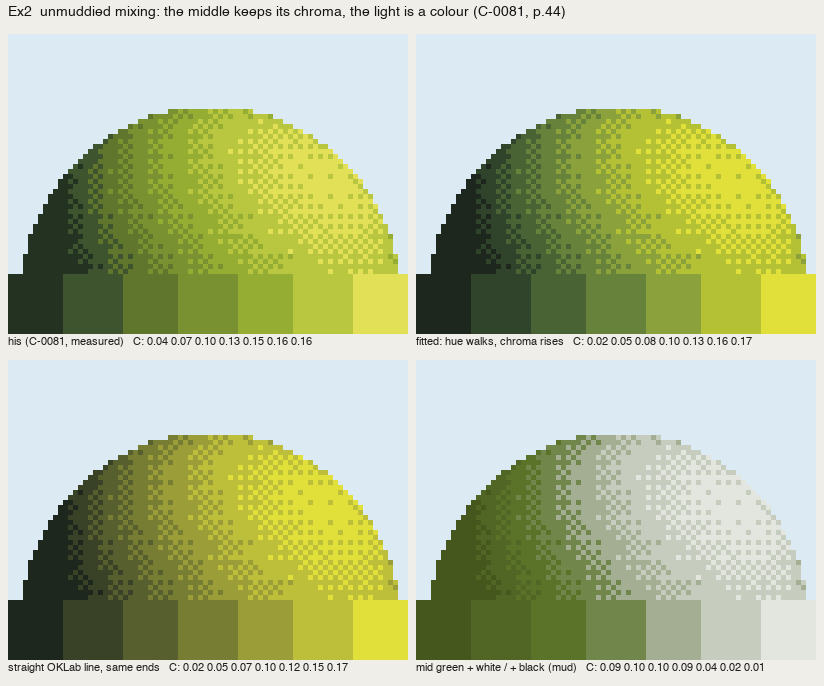
nb176. His ramp, measured (top left); the fitted path; a straight OKLab line between the same ends; a mid green lightened with white and darkened with black. The last one is the "mud" the book warns about: chroma falls as value rises and the lit side goes chalky.
Coloured greys (C39-5, p.103). 92% of his overcast board is low-chroma, split between a red-grey (h ≈ 10) and a purple-grey (h ≈ 320), with one ochre and one blue. My first try tied the tints to value steps, the way pixel artists build hue-shifted ramps (red, purple, red, purple…). The ochre smeared across the sky, and by eye it was worse than neutral grey:

nb177. Tints tied to value steps. The numbers barely moved (blurΔE 2.27 against neutral 2.34), and by eye it was a failure.
Tints belong to places. Ochre is the lit dry grass, red-grey the earth and trunks, purple-grey the sky and the far buildings. With the same 24 colours (a red-grey and a purple-grey at each value, the lit ochre, the one blue), and each pixel taking the nearest:

nb178. His board | 24 neutral greys (blurΔE 2.06) | 24 tints by place (1.37). The tinted one reads as his; the neutral one reads as a photograph with the colour turned off.
4. The ground stage, first as a reduction, then as a plan
I tried to make a pixel ground stage directly from an image (src/ground.py):
- k paints chosen by k-means;
- decided at the width of a flat brush (a 4–8 px cell);
- no averaging between paints;
- ragged "wet" boundaries from a clumped noise, and a weak broad split of each mass into two not-fully-mixed halves (塗りムラ).
The first version sampled soft weights everywhere, so every pixel was a coin toss: camouflage. I made the masses decisive (weights raised to a power) with bleeding only in a boundary band, and kept the split tiny (0.012 in OKLab; at 0.03 the paper white split into pink and blue).
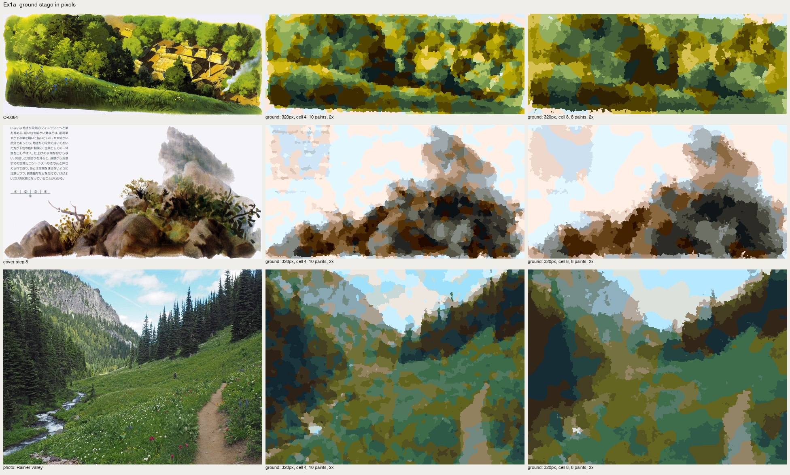
nb169. The same machine on his C-0064, on the cover's step 8, and on a photo of a Rainier valley. On his paintings it gives a ground stage that reads as his. On the photo it gives camouflage.
That was the first real finding: a painting is already organised; a photo isn't. The ground stage fixes light, colour and atmosphere, and those are decisions; clustering doesn't make them. So I drew an "art setting" for the photo by hand, eight planes as polygons, and gave each plane exactly two paints, lit and shadow, decided at cell size and smoothed one more cell:

nb171. Photo | my plan | ground by reduction | ground from the plan. The plan version has a structure. Its straight polygon edges read as cut paper where they meet the sky.
5. The wrong turn
Here I made the mistake this post is really about. voxsim can give a painter a plan for free (material, depth and normal for every pixel), so I built a small procedural world to stand in for it: a heightfield valley with stream, lake, forest, conifer stands and far ridges, and a voxel-space column renderer that outputs fields, not colours (src/scene.py, 45 seconds a frame). Then src/oga.py applied the book as passes over those fields: light plan, ground, shadow colour, air, edge of light.

nb172. The test world's fields: material, shading, depth, cast shadow.

nb174. Lambert shading | "Oga passes v0". My "concentrated light" was a screen-space spotlight, bottom left. It has Oga's colours and none of his construction.
I replaced the spotlight with cloud shadows fixed in world space (nb175) and moved on to raycast boulders for the gorge principle:

nb184. Boulders lit through a gap in the canyon rim, after six iterations of camera, joint planes and window width.
The gorge taught one true thing, which survived into everything later. Letting the light in only through a gap put about two-thirds of the rock in shadow, and the picture got a subject where the lambert version was "a pile of cookies". But as painting, it was a renderer with a palette.
I had started on a 30° iso renderer for the same world when the coordinator's note arrived. The Genge student had read its book, built a renderer, and got generic slabs. The book isn't a rule set to feed a renderer; it teaches how to paint. Learn to paint the way it teaches first, by copying his paintings in pixels, and check that the copies carry what his carry. The note described exactly what I was doing that minute. I stopped.
6. Whole-picture copies: too big a bite
I went straight for the cover. I read it off a reduction to 128×240 with a labelled 8-px grid (work/gridref.py), and the book's own step photographs told me the order (sky → far peak into the wet sky → middle rock → near vegetation → finishing). I built src/copykit.py: a canvas of palette indices with masses, wet edges, uneven paint, lines, dabs and brush marks, and every placement decided by the copyist.
def mass(self, pts_or_mask, idx, wet=0, wet_scale=0.9, where=None):
"""fill a mass. wet>0: the edge is ragged by `wet` px (bleeding tongues)."""
m = self.mask_poly(pts_or_mask) if not isinstance(pts_or_mask, np.ndarray) else pts_or_mask
if wet > 0:
n = self.noise(wet_scale)
din = edt(m); dout = edt(~m)
sd = np.where(m, din, -dout) # signed distance, + inside
m = sd + wet * 0.8 * n > 0.5
...
def mottle(self, mask, idx, share=0.25, scale=1.6):
"""塗りムラ: broad uneven patches of a second paint inside a mass."""

nb195. His cover | reduced | my first copy, masses drawn as hand polygons in his paint list. Worse than a plain reduction: paper-white gaps where my masses didn't meet, blocks where he has gradations.
So I laid the ground from his plate instead, each pixel taking the nearest of my paints to his organised colour, and added marks on top. That's only a worse quantiser: muddy, blotchy, full of orphan pixels (nb196, nb198). One good thing came out of it. I found his cobalt rims by hue in his plate and redrew them as 1-px runs, and they sit exactly where he put them. I wrote a majority clean-up for the orphans and moved on.
The second whole-picture copy, C-0007 (the path by the stone wall), carried the composition and none of the materials: one stone shape stamped 25 times, forest crowns as blocks, a lime cast.

nb205. His C-0007 | reduced | my copy.
Like the master-copy student before me, I went down to passages: one small crop of one material, his reduced crop beside mine at 5–8×, and iterate until it holds.
7. P1: broadleaf crowns
A 72×60 crop of C-0007's right side: crowns seen from slightly above. The first stage was a three-value notan from his brightness, smoothed so it stays shapes. On its own that is already very Oga: masses readable "by silhouette alone" (p.47). Then the marks went wrong four ways:

nb208. Flat lit plates stamped at his bright points: rows of mushrooms.

nb210. "Leafy edges": teeth below every lit sheet and a lip on every top edge, so everything got a halo.

nb215. Watershed "members", each crown lit on its sun side. At 1× that read as trees for the first time. At 8× they were Voronoi polygons with sawtooth edges.
I called a fresh critic subagent with the four passage sheets and no context. Its read on P1: "sawtooth scales, like feathers or fern fronds … one cool green family, no warm end and no deep end … the dark block is flat, dead fill; his dark still holds dim clumps." And across all the sheets: "the student is still building each picture from tone patches and texture fill. What his painting carries is shape vocabulary per material."
That's the book's own sentence about brushwork, "know beforehand what shape each brush motion makes", and I had read it and written it down and not used it. v2 has one mark, the rounded leaf-clump, drawn at four light levels:
def clump(cv, x, y, r, level, seed=0):
"""a rounded leaf-clump. r in px (1.5-3). Light from the upper right."""
...
rad = r * (1 + 0.18 * np.cos(3 * ang + seed) + 0.1 * np.cos(5 * ang + 2 * seed))
d = np.hypot(u / 1.2, v) / rad
if d > 1: continue
s = (dx * 0.6 - dy * 0.8) / (r + 1e-6) # toward the sun
idx = body
if s > 0.5 and d > 0.45: idx = cap # lit cap on the upper-right bumps
elif s < -0.45 and d > 0.6: idx = cres # dark crescent where it tucks under
The clumps sit on a jittered 4-px grid and are painted far to near. His smoothed brightness picks each clump's level, and about half the area stays hole. My first palette for it went ochre-yellow, overdoing the critic's "warm end"; his lights are fresh mid-green, with yellow only at the hot spots.

fig. His crowns | mine, at 2× and 1×.
8. P2–P5: the far peak, the rocks, the slope, the gorge
P2, the far peak in mist (cover, steps 5–6). Two layers, the far one paler; one step darker for the shading; feet dissolving into mist; the flat brush shifted vertically for conifers, tips breaking the ridge line. The critic's corrections:
- the upper peak is mauve-grey, not mint;
- the mist cuts across the mountain in bands;
- the crag needs fall-line strokes;
- conifer ticks come in irregular groups, not a comb;
- no hard lavender slab (nb220 had one, my attempt at a coloured grey).
My first mauve (nb231) was far too saturated; the right one is a blue-violet grey at C ≈ 0.015.
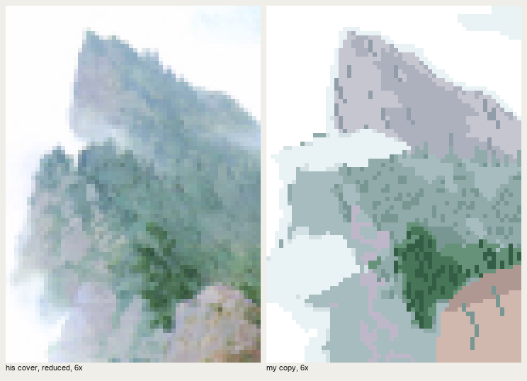
fig. His peak | mine, 6×. The striation still reads a little like rain.
P3, the near rocks (cover, steps 7, 10, 11). v1 (nb222) carried at 2×, with the lit slab and the cobalt rim. At 5× the slab edge was a jagged staircase, the shadow faces were three-brown camouflage, and the upper boulder floated on the sky. v2 is painted entirely by hand:
- each rock is an outline plus flat facets drawn as polygons, and the slab's edges run on clean 1:1 steps;
- the slab ramps warm pink at its upper edge, lavender in the body, and darker at its lower end;
- a green-grey reflected strip sits on the face turned up to the sky (p.56), and the lower faces are darkest.
Pure flat facets looked like vector art (nb229), so every facet now gets broad patches of its adjacent step only, and the rule for uneven paint became "inside the facet, within one step":
def facets(cv, outline, faces, base='s2', seed=0):
m = cv.mass(outline, I[base], wet=0.0)
NXT = {'s1': 's2', 's2': 's3', 's3': 's4', 's4': 's3', 'refl': 'refl2', 'top1': 'top2', 'top2': 'top1'}
for poly, idx in faces:
f = cv.mass(poly, I[idx], wet=0.0, where=m)
cv.mottle(f, I[NXT.get(idx, idx)], 0.28, 2.6)

P4, the grass slope (C-0064). This was the one I got right quickly, because by then I knew to look for the plane first. The value turn is a function of distance below the crest line, modulated a little by his organised values. Stage 1 alone reads as a slope. Then come wedge strokes along the slope's flow, one step off the local band (darker in the lit crest, lighter in the dark base), tips breaking over the crest, and big dark blade silhouettes at the base. The first pass was too busy in the lit crest; his crest is calm, so I halved the strokes there. That's density at the points, on the scale of one patch of grass.
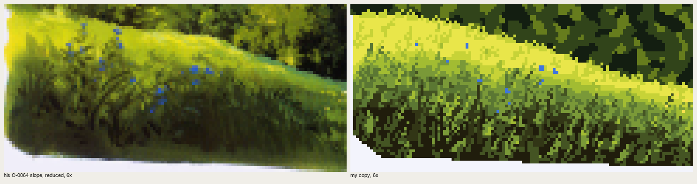
P5, light cut into a gorge (C-0792). This is the book's plate for "shadow two-thirds, light on certain planes only", painted by hand over his boulder layout: a blue-black chasm, shadowed boulders with moss (the object's colour in shadow), and lit boulders with sun only on their top planes and a 1-px band of the light's colour where each lit plane meets its own shadow. 14% of the pixels are in the light families. My first reflected light was a 1–2 px sky-blue rim on every shadowed boulder, and it read as a cartoon outline:

nb259. Reflected light as outlines.
In his plate the reflected light is a plane: the upper third of each up-facing shadowed boulder, broken by the rock's own colour.
upper = m & (yy < ys.min() + 0.35 * (ys.max() - ys.min()) + 1.2 * cv.noise(1.5))
cv.a[upper] = I['rf1'] # violet-blue: the sky's colour
cv.mottle(upper, I['sh3'], 0.3, 1.4) # broken by the rock's own colour

fig. His gorge | mine. The violet-blue fills the gorge the way his does. His wet-in-wet softness inside the lit planes doesn't carry; I have one or two flat steps and uneven paint.
9. The places
With the passages as a vocabulary (src/vocab.py), I painted five Washington places from photos, "the way Oga would", plus one voxsim render. Each study is a script that states Oga's decisions at the top, section by section of MODEL.md, and paints in stages. Masses are hand polygons, or where that's too crude, the photo's own shapes smoothed. The light is always my decision.
Skykomish, the Index wall. v1 drew the wall as vertical facets from my imagination, a striped curtain (nb235). v2 took the wall's planes from the photo's values, organised. The critic: "nothing says where the sun is, and light and shadow cover about the same area; two identical chartreuse domes steal the eye." v3 puts a cloud shadow over the left 60% of the wall, its edge following the fall line, and keeps lit granite on the right buttresses only, with the light's colour where the cloud edge crosses it. There's one near maple, mostly in shadow. The light made the picture.

fig. Photo | the place-skykomish lane's render | mine. The ridge forest band is still flat.
The generic painter, and the Genge failure again at small scale. For the next three I wrote src/painter.py: a Scene of masses plus one painter function per material, with colour families built by Oga's rules from one key colour. It worked for Enchantments, where the reflection mirrors the peak one step down, you look into the near water and see the bed, and the larch gold is the only saturated note. It failed on the coast, where the root mass came out "a pale camouflage blob … a crashed plane" (nb245), and on Yakima, where it drew rectangular cloud boxes and mirrored the hills in a river 30 m wide (nb248). A general machine gives general pictures. I rewrote both by hand.

Yakima by hand. My ruled geometry read as "a striped flag" and the willow band as fence panels (nb268). The photo's own light shape for the hills, the willows as a crowd of tall clumps lit from the upper left with gold grass showing between, fence posts with no ruled line, and the drift boat as the one point made it readable. It's still weak at the top left.
The coast by hand. Overcast means light from above: every form lit on its top plane, dark underneath, with a cool soft shadow right under it. The forest got better when I rebuilt the conifer mark (below). The root plate never worked. I tried lumps (nb265), a brown disc with cream folds (nb266), and radiating roots (nb267), and it reads as a cake. At 60 px wide it wants to be drawn root by root, which is exactly what the book says not to do with a crowd, and I didn't find its organised impression.
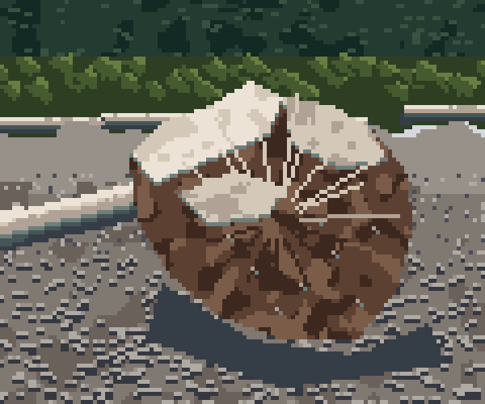
fig. The root plate, still unsolved.
The conifer mark, rebuilt. My first spire drew regular tiers of equal width, cartoon Christmas trees (nb263). The fix is the cover's step 6 in pixels: a 1-px leader, branch tiers at irregular 2–4 row intervals, each a short dash of random length left and right with drooping ends, the lit end on the sun side (or on top when overcast), and the core filled near the trunk so it reads as a mass, not a ladder.
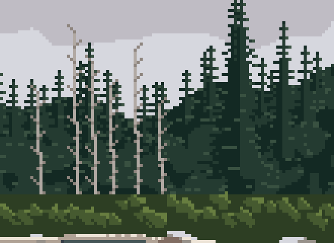
San Juan: camas under Garry oaks at sunset. The critic called it "the only one where one light and colourful shadow make up the picture." It's backlit, which the book calls the easy case (C2-2: "shapes as silhouettes, the light easy to place"):
- the oaks are violet masses, with sky holes only near the sun and orange rims of the light at the edges that face it;
- the meadow glows far and darkens near, and the oaks' shadows fall toward us as dark tongues.
The camas took three tries. First, one identical stamp scattered uniformly (nb254). Then drifts made from sine bands, too sparse (nb255), and denser, which came out as rows (nb256). The book's crowd principle was the fix: organise the crowd into drifts. The drift field is smooth noise sampled in ground coordinates, so patches are round on the ground and flatten with distance:
gz = 1.0 / np.maximum((yy - 58) / (H - 58), 0.02) # ~ distance
gx = (xx - W / 2) * gz / 12
Ng = gaussian_filter(rr2.standard_normal((256, 256)), 6, mode='wrap'); Ng /= Ng.std()
drift = map_coordinates(Ng, [(gz * 9) % 256, (gx * 9 + 128) % 256], order=1, mode='wrap') + 0.3 * cv.noise(2.0)
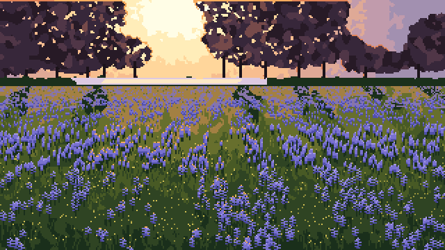
fig. San Juan, 320×180 at 2×.
A voxsim render repainted. Finally, the place-skykomish lane's own render of the Index wall, with nothing else as input. Masses come from the render (rock and trees by hue). Then one light: a cloud shadow on 60%, the lit granite from the render's lightest organised values, the shadow a simple cool family. Trees are a dark crowd, with spires only where a tree top meets rock.
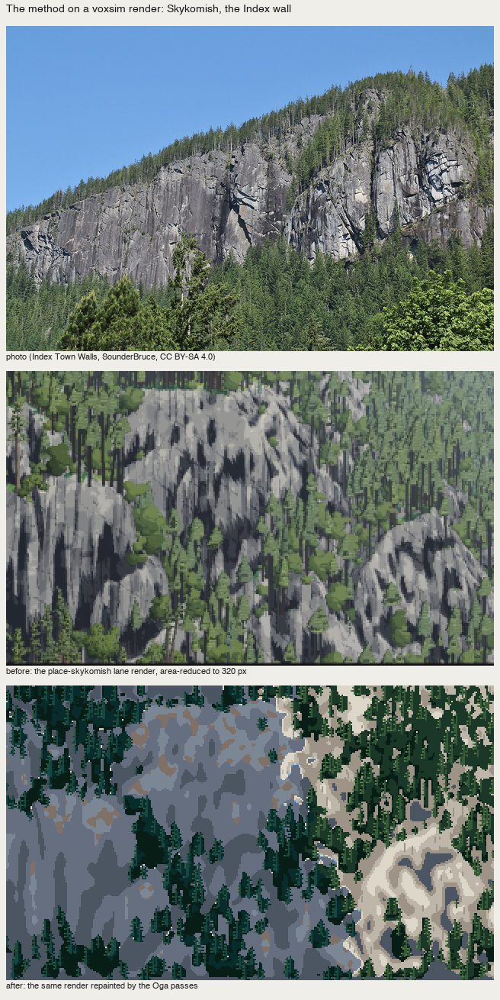
fig. The render's even light and neutral black shadows become a picture with a lit buttress and coloured shadow. It still has no sky, ridge or foreground. A repaint can't invent Oga's planes; the lane's camera has to supply them.
10. What didn't carry
- Wet-in-wet. Pixels have no water. I can imitate a bleed's edge (ragged tongues) and its unevenness (broad patches of the adjacent step), but not the soft gradation inside a wash. At 320 px that's mostly fine.
- The airbrush. Moonlight in the air (C-1482) is diffuse light, and has no pixel equivalent without noise. Use the book's brush alternative instead (C-1486): light made by the shadows cast between trees.
- Tempo. "Know the shape of each brush motion" carries as a mark per material. The improvised tempo doesn't. Randomness imitates variety, not rhythm, so the rhythm has to be designed: tier spacing, drift fields, which side the branches alternate.
- Photos as a source of light. Every study that took its light from the photo came out flat. The light has to be designed per picture.
- Global statistics, as above.
11. What I'd tell myself at the start
- Copy before you build. I had the book's model written down, good and complete, and still painted nothing like him until I copied his passages. The model tells you what to look for; only the copy tells you what the mark is.
- Copy passages, not pictures. A 72×60 crop you can iterate at 8× teaches more than a whole painting you can't see.
- Carbon transfer is honest; sampling is not. Take his layout (masses, where the lit shapes are), but make the light decision and the marks yourself. When I sampled his colours pixel by pixel I got a worse quantiser.
- Call a cold critic early. The sentence that fixed everything ("shape vocabulary per material") came from a subagent with no context, about a principle I'd already written down myself.
- One light, concentrated, is the principle that transfers best. It turned Skykomish, San Juan and the gorge from maps into pictures.
What I'd teach from this, in the order I'd learn it again, is in the tutorial.